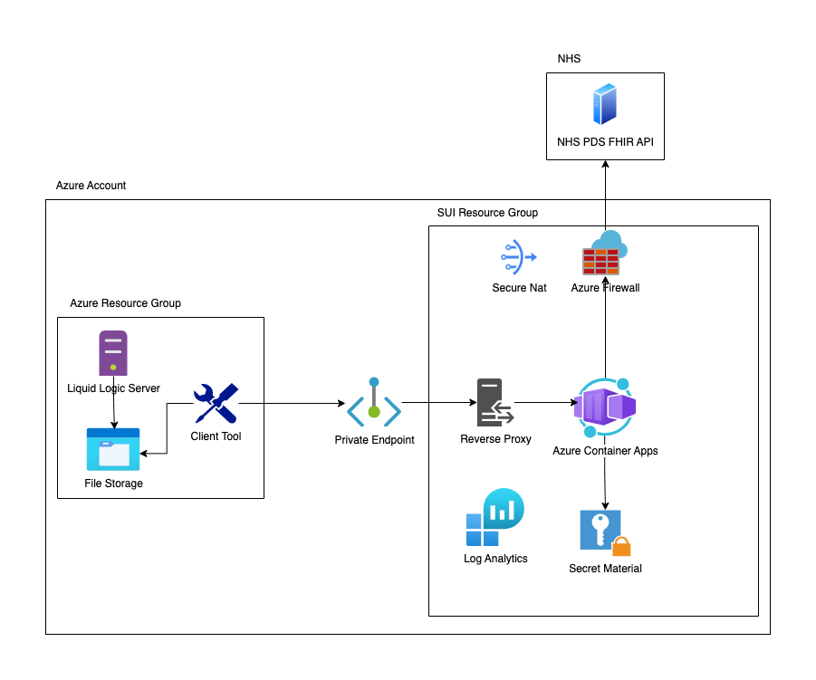

Architecture
These are the architecture documents.
Constraints and Principals
This project is aimed at providing a solution for Local Authorities that require more accurate matching capabilities.
It requires a use-case to be agreed with NHS England to allow the use of the PDS FHIR API. This will require a number of governance steps to be followed, such as the DTAC.
The PDS FHIR API has a limitation of 5 transactions per second for requests, and the "fallback" logic used in the pilot means each match to a person may use greater than 1 request. This means the PDS FHIR API is expected to initially be the biggest bottleneck for performance.
For principles, please refer to the DfE Technical Guidance and Secure by Design Principles.
High Level Logical Architecture
C4Container
title High Level Components - NHS SUI
Container_Boundary(c1, "Local Authority") {
System(laclient, "Local Authority Client")
System(sui_matching_service, "Sui Matching Service")
ContainerDb(db, "File Storage", "Liquid Logic Output")
}
Container_Boundary(c2, "NHS Services") {
System(nhs_fhir_api, "NHS PDS FHIR API")
System(nhs_auth_api, "NHS PDS Auth API")
}
Rel(laclient, db, "Gets File")
Rel(laclient, sui_matching_service, "HTTPS")
Rel(sui_matching_service, nhs_fhir_api, "HTTPS")
Rel(sui_matching_service, nhs_auth_api, "HTTPS")
Systems Architecture
Physical View

Definitions
Liquid Logic Server (Local Authority owned and run): Case management system used for recording referrals. Contains records with demographic information about referrals.
File Storage (Local Authority owned and run): Server that will contain the file with the source information.
Client Tool (New Component): A tool that takes the input file from the file storage and loops through the rows of data making a request to the SUI matching service. It outputs a results of the matching process and extra information about it.
SUI Resource Group (New Component): Represents the application that will be deployed in a Local Authority.
Step by Step Flow Happy Path
- A nightly batch job runs that outputs a CSV file to an accessible location.
- The client tool periodically checks for a new file.
- When a new file is present it consumes it and starts to process the data.
- The client loops through the records in the file and extracts the information needed to be able to make an API call against the SUI Matching Service via a private endpoint.
- The SUI Matching Service ingress controller (reverse proxy) accepts the request and forwards it onto the service.
- The SUI Service validates the data.
- With valid data it then checks authentication is in place to make a request to the NHS.
- With valid data and a valid authentication token it then makes one or more calls to the NHS PDS FHIR API to retrieve a NHS number. This call is made over the internet.
- The returned results are examined and then returned to the client.
- The client outputs the data to a results CSV file (NHS numbers alongside the data) and a metadata CSV file that gives further information on the process and input data.
Sequence Diagram
sequenceDiagram
box Client Tooling
participant client as Client Tool
end
box SUI Service
participant suimatch as SUI Matching Service
participant suiexternal as SUI External Service
participant suiauth as SUI Auth Service
end
box NHS Services
participant nhsauth as NHS AUTH API
participant nhssearch as NHS FHIR API
end
client ->>+ suimatch: Sends record to be validated and matched
loop Validate Data
suimatch ->> suimatch: Validate the data sent
alt Invalid Data
suimatch -->> client: Data invalid end process
else Valid Data
suimatch ->>+ suiexternal: Sends query so a request can be made
end
end
suiexternal ->>+ suiauth: Checks authentication status
alt Token Does Not Exist
suiauth ->> nhsauth: Get new token
nhsauth -->> suiauth: Return new token
else Token Exists
suiauth -->> suiexternal: Token available to return
end
suiexternal ->> nhssearch: Makes request to NHS service
nhssearch -->> suiexternal: Returns data
suiexternal -->>- suimatch: Passes response to be formatted
suimatch -->>- client: Returns data to client to be output
Application Architecture
Container diagram
C4Container
title Container diagram for SUI Matcher
System(laclient, "Local Authority Client", "The client to connect to the service")
Container_Boundary(c1, "Sui Matching Service") {
Container(reverse_proxy, "Gateway", "C#, .NET 8, YARP", "The reverse proxy/API gateway of the SUI matcher.")
Container(matching_api, "Matching APIs", "C#, .NET 8, MassTransit", "The barista service.")
Container(auth_api, "Auth APIs", "C#, .NET 8, MassTransit", "The authentication service.")
Container(external_api, "External Services", "C#, .NET 8, Marten", "Makes the outbound connections for other services")
Boundary(b1, "Docker containers", "boundary") {
ContainerDb(cache, "Storage", "Redis", "Stores bearer tokens for auth")
Container(keyvault, "KeyVault", "Azure Key Vault", "Storage of secret values")
}
}
Container_Boundary(c2, "NHS PDS FHIR API") {
System(pds, "PDS FHIR API", "The PDS service")
}
Rel(laclient, reverse_proxy, "Uses", "HTTPS")
UpdateRelStyle(laclient, reverse_proxy, $offsetY="-20")
Rel(reverse_proxy, matching_api, "Proxies", "HTTP")
Rel(auth_api, cache, "Adds/checks Tokens", "HTTP")
Rel(auth_api, keyvault, "Gets Secrets", "HTTP")
Rel(auth_api, pds, "Authenticates", "HTTPS")
UpdateRelStyle(auth_api, cache, $offsetX="30")
Rel(external_api, cache, "Gets Token", "HTTP")
Rel(external_api, keyvault, "Gets Secrets", "HTTP")
Rel(external_api, pds, "Retrieves NHS Number", "HTTPS")
UpdateRelStyle(external_api, keyvault, $offsetX="40", $offsetY="40")
Rel(external_api, auth_api, "Calls", "HTTP")
Rel(matching_api, external_api, "Calls", "HTTP")
Services
matching
The matching service provides the ingress into the application. It also serves as the logic controller for the application. It accepts the following parameters:
- given name (required)
- family name (required)
- date of birth - which can be a range (required)
- gender
- postcode
- email address
- phone number
Adapted from the schema specified here NHS PDS FHIR Schema.
It validates these parameters meet the schema and then handles the logic for making external calls to the NHS in order to find a matching NHS number.
Response 200:
{
"result": {
"matchStatus": "match",
"nhsNumber": "1234567890",
"processStage": "3",
"score": "0.96"
},
"dataQuality": {
"given": "valid",
"family": "valid",
"birthdate": "valid",
"addressPostalCode": "valid",
"phone": "invalid",
"email": "invalid",
"gender": "notProvided"
}
}
Result
| Name | Type | Desc | Values |
|---|---|---|---|
| matchStatus | string | Match Result | See Match Status table below. |
| nhsNumber | string | nhsNumnber | 10 digit string, empty string |
| ProcessStage | int | stage of the process it exited at | 0, 1, 2, 3 |
| score | number | Score of the search | 0.0 to 1.0 |
Match Status
| Name | Desc |
|---|---|
| match | One match has been returned |
| noMatch | No match has been returned |
| potentialMatch | There is a potential match. One match with score above 0.85 and below 0.95 |
| lowConfidenceMatch | There is a low confidence match. One match with score but is below 0.85 |
| manyMatch | System returns mulitple matches |
Data quality
| Return | Type | Desc |
|---|---|---|
| Valid | string | Data provided is valid |
| Invalid | string | Data provided is invalid |
| notProvided | string | No data was provided |
auth
Handles the secret key material in order to get the bearer token. It will use azure Key Vault to get the material needed to retrieve the bearer token. It will then store the bearer token in Redis to be accessed by the external service.
external
Makes the external calls to the NHS PDS endpoints. Will get secrets from Key vault and bearer token from Redis.
Search Criteria
Below there is reference to scoring. This scoring is the confidence score that is returned by the NHS when we perform a search. More information can be found about that in the scoring section here: PDS FHIR Search
---
title: Matching conditions flow
---
stateDiagram-v2
clean: Canonicalise/clean data
apply_match_conditions: Apply Match Conditions
if_single_match: Single Match found
if_no_match_state: No Match found
confirmed_match: Confirmed Match
potential_match: Potential Match
low_confidence_match: Low Confidence Match
no_match: no match
manual_process: Manual Process
multiple_match: Multiple Matches
[*] --> clean
clean --> apply_match_conditions
apply_match_conditions --> if_single_match
apply_match_conditions --> multiple_match
multiple_match --> manual_process: No NHS number
if_single_match --> confirmed_match: if >= 95% confident
if_single_match --> potential_match: if < 95% and >= 85% confident
if_single_match --> low_confidence_match: if < 85% confident
confirmed_match --> [*]: has NHS number
potential_match --> manual_process: has NHS number
low_confidence_match --> manual_process: has NHS number
apply_match_conditions --> if_no_match_state
if_no_match_state --> apply_match_conditions: if more match conditions
if_no_match_state --> no_match: if no more match conditions
no_match --> manual_process: No NHS number
manual_process --> [*]
Data Overview
This section is a work in progress...
This project will collect anonymous data about the process. For each record that is sent to the service we will record information on the following:
- Data Quality
- Match Result
- Match Result Process Info
- Age Range
This will allow for aggregate information to be collated and an evaluation on the process overall to be viewed.
This information will be collated via log messages.
No PII will be recorded.
Non Functional Requirements
Placeholder
Non Functional Priorities
The Non-Functional Priorities for the pilot are listed below.
- Security - Very sensitive data must be protected.
- Usability - Easy for both internal teams and external partners (e.g., Local Authorities) to use and adopt.
- Compatibility - Integration with existing systems like the NHS and Local Authority ecosystems.
- Maintainability - Highly iterative development process anticipated.
- Reliability - Not initially business-critical. Reliable enough for the pilot phase.
- Performance - Handling relatively small workloads during the pilot phase.
- Availability - Emphasis on maintenance and ensuring sufficient uptime.
- Portability - Targeted at limited settings for the pilot.
- Scalability - May scale from 1 to 4 Local Authorities (LAs) quickly, this would require these priorities to change. Future hosting patterns to be reviewed.